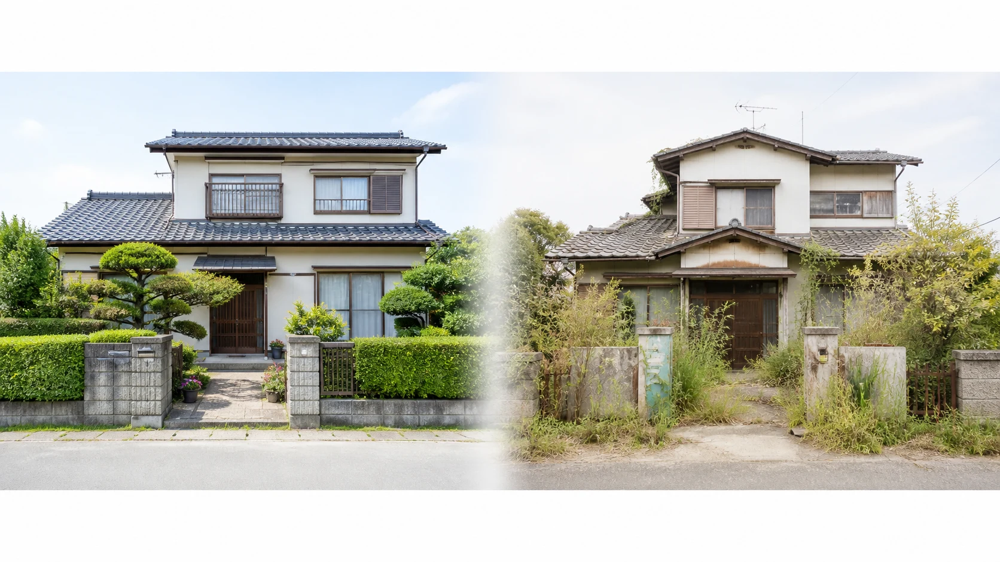
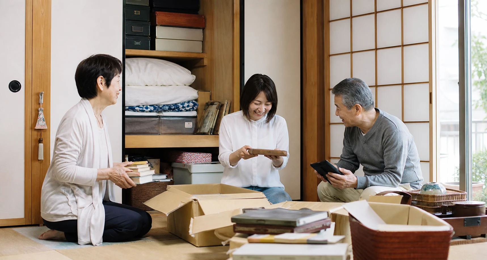
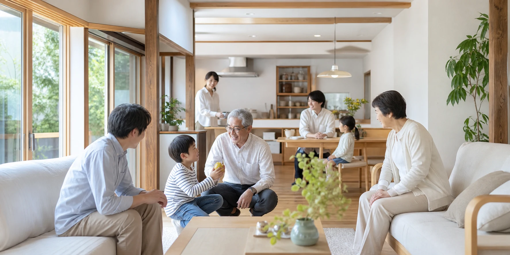

1. 空き家900万戸――もう「よその話」ではない
総務省「令和5年住宅・土地統計調査」（2023年）によると、全国の空き家は900万2千戸で過去最多、空き家率は13.8%で過去最高となりました。ざっくり言えば7〜8軒に1軒が空き家。この30年でおよそ2倍に増えました。7〜8軒に1軒――これは誰の実家にも起こりうる、ごく身近な課題なのです。
空き家900万戸時代の、一番現実的な備え
公開日：2026年8月25日
 文｜エイスケ（住宅と教育の専門家）
文｜エイスケ（住宅と教育の専門家）

毎日1万歩の散歩が日課の私は、最近どうしても目に留まる家があります。郵便受けにチラシが溢れ、庭木は伸び放題――明らかに誰も住んでいない家です。これは他人事ではありません。今回は、家を"畳む"話。重いテーマですが、公的なデータと一冊の本を手がかりに、できるだけ誠実に、煽らずに整理します。先に一番大事なことを言っておきます。実家じまいは、親が元気なうちに考え始めるほど、ラクで、安く、円満に済みます。
総務省「令和5年住宅・土地統計調査」（2023年）によると、全国の空き家は900万2千戸で過去最多、空き家率は13.8%で過去最高となりました。ざっくり言えば7〜8軒に1軒が空き家。この30年でおよそ2倍に増えました。7〜8軒に1軒――これは誰の実家にも起こりうる、ごく身近な課題なのです。

実家が実質的に空き家になるのは、たいてい"親が亡くなる前"。施設への入所や入院がきっかけです。親は生きている。でも家は空いている――この期間が数年、ときには10年近く続くことも珍しくありません。国交省の調査でも、住まなくなった理由は「死亡」約44%、「別の住宅に転居」約39%で約8割を占めます。名義も判断もすべて宙に浮いたまま時間だけが過ぎる。これが実家の空き家化の、一番リアルな入り口です。
都市計画研究者・野澤千絵さんの『老いた家 衰えぬ街 住まいを終活する』（講談社現代新書、2018年）が打ち出すのが「住まいの終活」という言葉です。人生の終活と同じように、住まいにも"畳み方"を前もって考えておく必要がある、という提言です。不動産の"売る側"ではなく、街全体の持続可能性を考える専門家の視点だからこそ、地に足のついた話になります。
理由は一つひとつ、「合理的な判断」の積み重ねです。①相続で名義が宙に浮く（取得経緯は相続が約55〜58%）②子世代が遠方に住んでいる③解体費用が重い（木造30坪で90〜180万円程度が目安）④そして最大の罠――更地にすると「住宅用地特例」が外れ、固定資産税が一気に跳ね上がります。税制が「空き家でも建物を残しておいたほうが得」という方向に、人々を静かに誘導してきたのです。

2023年12月施行の改正・空家等対策の推進に関する特別措置法で「管理不全空家」という区分が新設され、勧告を受けると住宅用地特例が解除されるようになりました。固定資産税が最大でおよそ6倍に跳ね上がる可能性があります。段階を踏む仕組みで、いきなり課税が跳ね上がるわけではありませんが、「放置していれば安上がり」という時代は終わりつつあります。
2024年4月1日から、相続で不動産を取得したことを知った日から3年以内の登記が義務になりました。過去の相続も対象で、2027年3月31日までに登記が必要です。怠ると10万円以下の過料の可能性があります。分け方が決まっていない場合の「相続人申告登記」という簡易な手続きもあるので、まず名義を確認することから始めてください。
理由は三つ。①選択肢が多く残っている（生前贈与という道も）②手続きが圧倒的にスムーズ（判断力があるうちなら本人の意思で進められる）③モノと思い出を一緒に片づけられる。そしてもう一つ、現場で見た怖い話――ご高齢の親御さんが家族に相談なく、本来は必要のない高額なリフォーム工事や、相場より大きく安い価格での売却を、その場で決めてしまう場面に何度も出会いました。親御さんの判断を頭ごなしに否定するのではなく、「大きな契約の前には一度みんなに相談してね」と約束しておくだけで、防げたはずのトラブルはぐっと減らせます。

関連する住まいの機能・設備を探す
関連記事
この記事を書いた人｜エイスケ
1986年生まれ、40歳。実家の建築業・不動産に10年間従事したのち、教育の世界へ。住宅と教育、両方のプロの視点から「豊かな暮らし」をテーマに忖度なく切り込みます。※本コラムは筆者個人の見解・経験に基づくものです。最終的な判断は各分野の専門家にご相談ください。